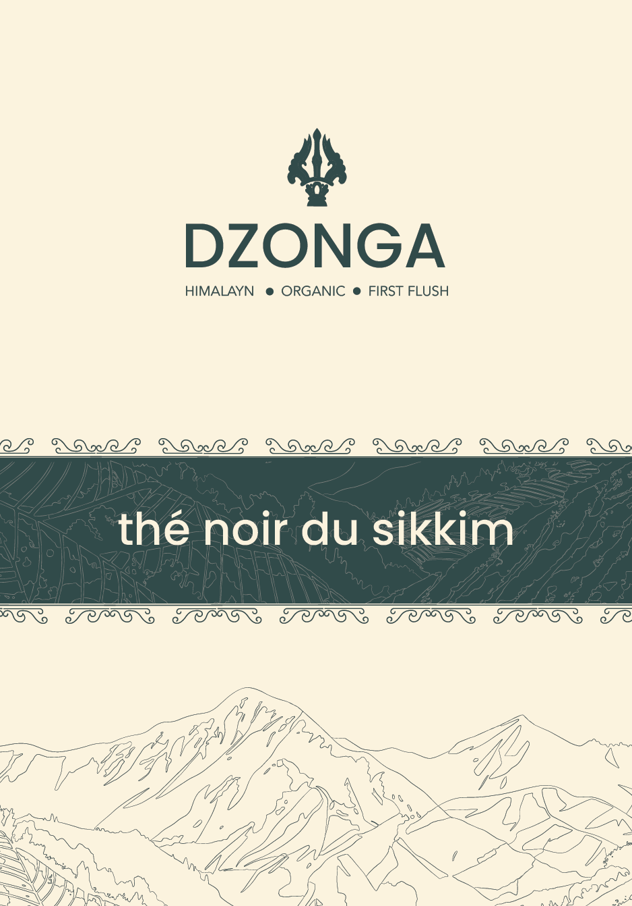
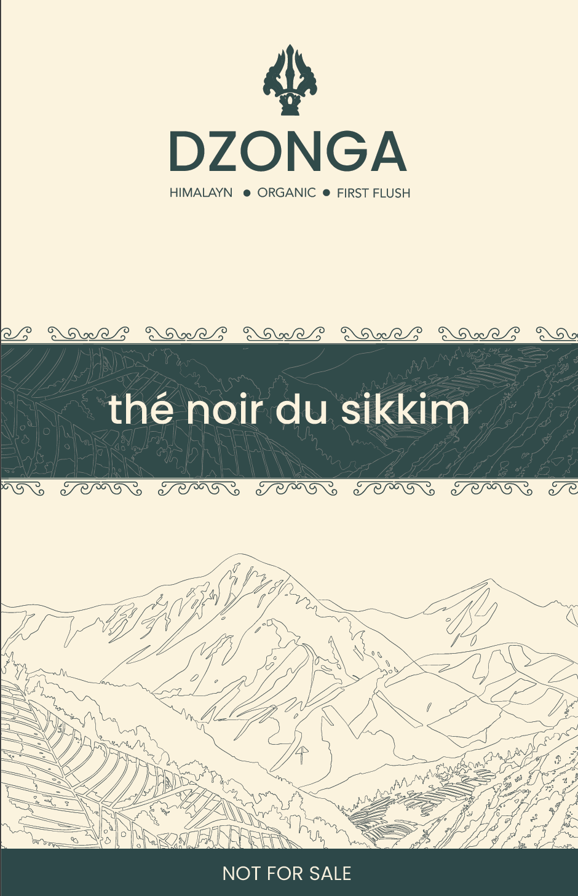

thé noir du sikkim
Sikkim Black, First Flush
Our signature tea. A bright, floral black tea with notes of apricot, honey and a soft muscat finish.
Himalayan Organic First Flush
thé noir du sikkim
Our story
Dzonga is named for the high places of the eastern Himalayas, where tea grows slowly in thin air, cool mist and long hours of mountain light. That slowness is what gives the leaf its depth.
We work with small organic gardens in Sikkim, picking only the first flush. These are the tender spring shoots that wake after winter. Each harvest is withered, rolled and dried by hand, then packed close to the gardens it came from.
Visit the origin

The collection
Every tea is single-origin, certified organic and picked by hand.
thé noir du sikkim
Our signature tea. A bright, floral black tea with notes of apricot, honey and a soft muscat finish.
thé noir d'été
Fuller and rounder, from the summer harvest. Notes of ripe stone fruit, malt and a gentle woody warmth.
thé vert de l'himalaya
Pan-fired and lightly rolled. A fresh, vegetal cup with sweet pea, cut grass and a clean mineral finish.
thé blanc des nuages
Downy buds dried slowly in mountain air. Delicate and sweet, with hay, white blossom and a hint of melon.
Origin
A small mountain state between Nepal, Tibet and Bhutan, watched over by Kangchenjunga. Its high terraces, cool nights and clean snowmelt make a leaf like no other.
The ritual
First flush leaf is delicate. Treat it gently and it will open up beautifully.
Use fresh water just off the boil. Boiling water will scorch the young leaf.
About one heaped teaspoon for every 200 ml cup.
Steep, then remove the leaf. Re-infuse once for a softer second cup.
Best without milk, so the floral notes can come through.
“A cup of first flush tastes like the morning it was picked: cool, bright, and very high up.”
Stay in touch
Subscribe for harvest notes, brewing guides and first access to each new flush. For wholesale and sample requests, write to us using the same form.